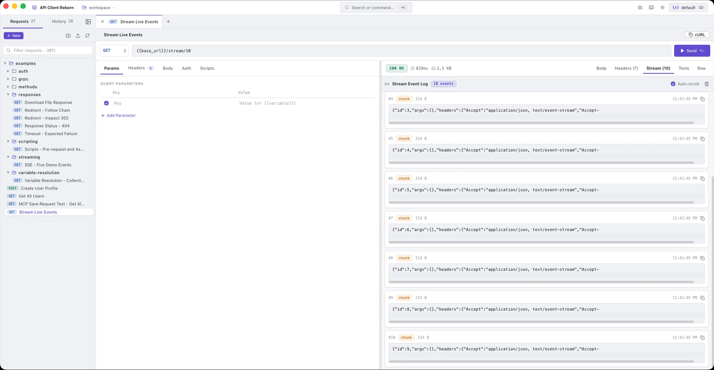
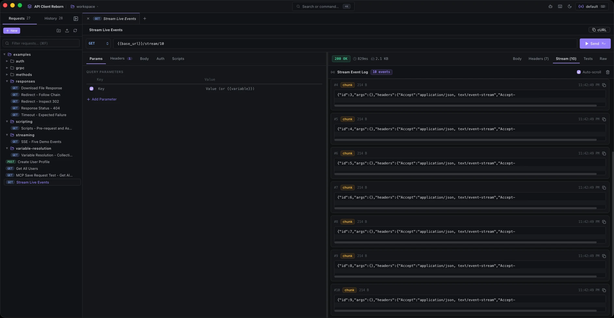

HTTP and gRPC
Compose HTTP requests or call gRPC services using reflection or local proto files. Inspect responses without leaving your workspace.
Build, test and automate API workflows with a lightweight, local-first API client. Designed for developers and AI agents.

Make a request, inspect the result and keep your work alongside the code it supports.
Compose HTTP requests or call gRPC services using reflection or local proto files. Inspect responses without leaving your workspace.
Save requests in readable files, organize them in folders and review changes using your existing Git tools.
Export collections as shell scripts or connect an AI assistant to your workspace through MCP.
Use the theme that feels right while you build requests and inspect responses.

Keep requests and environments on your machine, in a workspace you choose. No cloud account is required to work with your local files.
Commit shareable request files with your project, review diffs and collaborate through your usual Git workflow. Keep secrets out of version control.
Explore the file formatsmy-api-project/ ├── collections/ │ ├── auth/login.curl │ └── users/ListUsers.grpcurl ├── environments/ │ └── development.env.json └── .apiclient/ └── .secrets.env # keep local
Run the built-in MCP server from the application binary. A connected coding agent can discover saved requests, execute HTTP or gRPC calls, inspect results and save requests to your workspace.
# Connect your agent to a local workspace api_client_reborn mcp \ --workspace /path/to/your/workspace # Exported collection scripts run with curl; # gRPC exports also require grpcurl.
A focused desktop client, built with Tauri and your operating system's webview.
Work with headers, bodies, multipart uploads, environments and response downloads.
Use unary and streaming RPCs, server reflection or local proto files, with metadata and TLS controls.
Inspect SSE and streaming responses with a bounded preview while response data is written to disk.
Use supported Postman-style scripts and assertions; import Postman v2.1 collections and environments.
Choose your platform on the latest release page. See the installation guide for prerequisites and signing information.
Universal DMG for Apple silicon and Intel.
View macOS download64-bit installer or MSI; requires WebView2.
View Windows downloads64-bit DEB, RPM and AppImage packages.
View Linux downloadsEach client has its own approach. Here is a starting point for exploring the workflows each documents.
| Client | Documented workflow | Learn more |
|---|---|---|
| API Client Reborn | Local request files, shell export and a built-in MCP server. | Project features |
| Postman | Desktop and web apps, collaborative workspaces and a separate CLI. | Postman docs |
| Bruno | Git-native local collections and a dedicated collection CLI. | Bruno CLI docs |
| Insomnia | Git Sync stores project resources as YAML in a repository. | Insomnia Git Sync |
This is a brief workflow overview, not a complete feature or pricing comparison. Consult each project's current documentation for details.
Read the code, report an issue or contribute a change. The project is free and open source, with no paid tier required for its essential functionality.